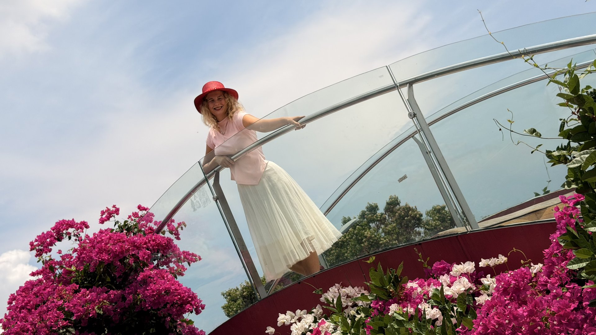

The bridge decides to float
Sild otsustab hõljuda
Some bridges carry you from one side to the other. This one just held me up between the flowers and the sky and asked nothing in return. The best crossings in life are like that — not a goal, but a gift.
Mõned sillad viivad sind ühelt kaldalt teisele. See sild hoidis mind lihtsalt lillede ja taeva vahel ja ei küsinud midagi vastu. Parimad ületamised elus on just sellised — mitte eesmärk, vaid kingitus.